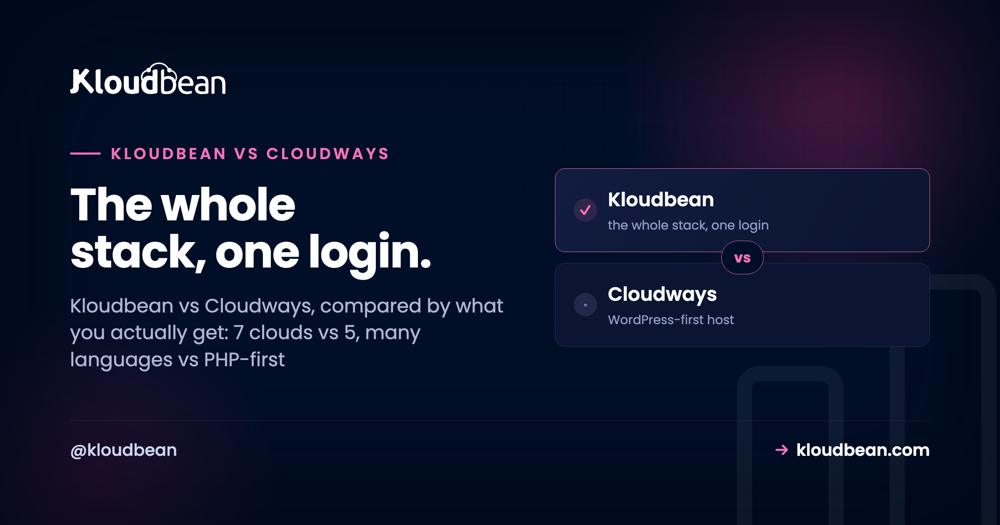
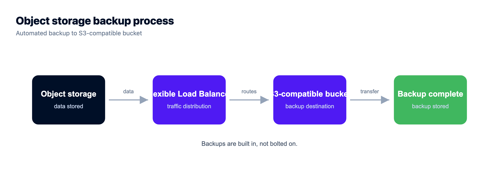
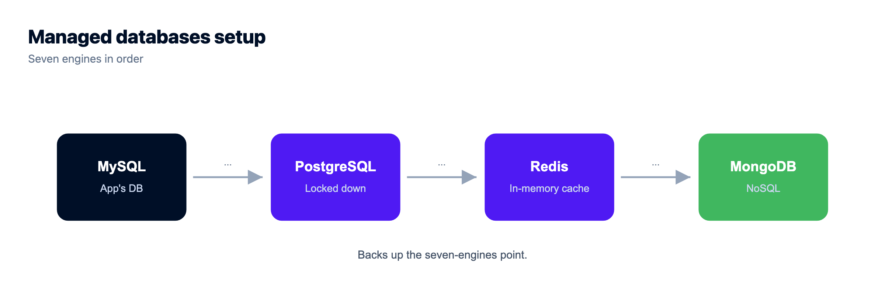

Kloudbean vs Cloudways: What You Actually Get, Compared

On paper, Kloudbean vs Cloudways looks like a coin flip. Both are managed cloud hosting. Neither hands you a raw server to babysit. Both sit on top of real clouds and run the OS, the stack, SSL, and backups for you.
So the spec-sheet framing (which one is "managed hosting") is the wrong question, because they both are. The useful question is scope: how much of your stack does each one actually cover? That's where they split, and it's not subtle. Cloudways is a managed host built around WordPress and PHP. Kloudbean is a full-stack platform: servers plus apps in many languages, seven managed database engines, object storage, a load balancer, and enterprise Kubernetes, in one dashboard. Let's compare what you actually get, not what the category label says.
Both are managed hosting, so the real question is scope, not quality. Cloudways is built around WordPress and PHP. Kloudbean runs those same stacks, WordPress, WooCommerce, Laravel, Magento, Drupal and Joomla, with staging, and then keeps going: seven clouds instead of five (a strict superset), apps in Node, Python, Ruby, Java and Go, seven standalone managed database engines, built-in S3-compatible object storage, a load balancer on every account, managed CI/CD with live build logs, and an enterprise path with Kubernetes and an audit trail. If your stack will only ever be WordPress, either will serve you. The moment it is anything more, only one of them already covers it.
What Kloudbean and Cloudways genuinely share
The common ground is real, and I'd rather say it plainly than pretend it away.
- A managed layer over real clouds. You pick a provider and a size. The platform handles the OS, the web stack, updates, and certificates. You're not the sysadmin on either.
- Top-tier infrastructure underneath. Both run your app on major clouds, not mystery shared hosting.
- Solid WordPress and PHP. Both run the stacks that power most of the web, with staging to test changes safely.
- Your app stays yours. The platform keeps the server healthy; your code and data are yours to export.
If your entire need is one managed WordPress or PHP site on a good cloud, you'll be fine on either. The gap opens the moment your project is bigger than that. Here's the shape of it.
What you actually get, category by category
Clouds: seven vs five (and it's a superset)
This is the one line in the whole comparison that isn't a matter of taste. Cloudways runs on DigitalOcean, Vultr, Linode, AWS, and Google Cloud. Kloudbean runs on those same five, plus AWS Lightsail and UpCloud. Seven total. So any cloud you could pick on Cloudways, you can pick on Kloudbean, with two more on the table. You provision by choosing the provider first:

Languages: the whole ecosystem, not just PHP
Cloudways is built around PHP, and WordPress and Laravel run well there. Kloudbean runs those too, and then keeps going: Node.js (Express, plus React, Vue, Angular front ends), Python (Django, Flask, FastAPI), Ruby, Java, static sites with free SSL, and one-click apps like n8n and Supabase. If your stack is a WordPress site plus a Node API plus a Python worker, you don't need three hosts. You need one that speaks all three. The full runtime list, the execution model, and the parts Kloudbean deliberately doesn't do are set out in the technical reference for developers.
Managed data: seven engines, standalone
On a PHP-centric host, the database is usually the MySQL or MariaDB sitting beside your app. Fine for WordPress. Kloudbean runs seven managed engines as first-class, standalone services: MySQL, MariaDB, PostgreSQL, Redis, Memcached, Elasticsearch, and MongoDB. Launch one, get a connection string, back it up automatically, then lock it down with IP allow-listing so only your app server can reach it. Deciding between engines? See MySQL vs PostgreSQL, or the how-to in add a managed database to your app.
Storage and load balancing: built in, not bolted on
Kloudbean includes S3-compatible object storage and managed Google Cloud Storage buckets, so big files live off your server instead of bloating it. And the Flexible Load Balancer is built into every account, off by default, ready when you need to spread traffic across nodes. No separate product, no separate login. Background on both: S3-compatible object storage and how a cloud load balancer works.

Deploys: managed CI/CD with live build logs
Connect a Git repo and Kloudbean builds and deploys on every push, streaming the build logs into the console so you can watch it happen (and see exactly where it fails). That's a step past a plain Git pull. Details in CI/CD auto-deploy from GitHub.


Team and enterprise: UAC, audit trail, Kubernetes
Kloudbean adds subusers with granular per-resource access control, and, for enterprise and government teams, an immutable audit trail (searchable, CSV export, built for compliance) plus Kubernetes and custom architectures. For a regulated org, that's the difference between a hosting plan and something closer to an in-house infrastructure team.
Kloudbean vs Cloudways, at a glance
| Cloudways | Kloudbean | |
|---|---|---|
| Core model | Managed WordPress / PHP hosting | Full-stack platform, one dashboard |
| Cloud providers | DO, Vultr, Linode, AWS, GCP (5) | AWS, Lightsail, GCP, Linode, Vultr, DO, UpCloud (7) |
| App types | PHP / WordPress-centric | PHP, Node, Python, Ruby, Java, static, AI apps |
| Managed databases | MySQL / MariaDB with the app | Standalone MySQL, MariaDB, PostgreSQL, Redis, Elasticsearch, MongoDB |
| Object storage | External / add-on | Built-in S3-compatible plus GCS buckets |
| Load balancer | Not a standard built-in | Built-in FLB, enable on any account |
| Deploys | Git pull integration | Managed CI/CD, live build logs on push |
| Cloudflare Enterprise | Add-on | Add-on (free for Enterprise) |
| Enterprise | Managed / scale options | Kubernetes, autoscaling, audit trail, custom setups |
| Who owns the app | You | You |
Cloudways' real strength, and what it does not settle
Cloudways' real strength is focus and a long track record in the WordPress and PHP world, and it is backed by DigitalOcean. That is worth one honest line, and here it is. What it is not is a tiebreaker, because the two things people reach for it over, WordPress maturity and a proven platform, are not exclusive to it. Kloudbean has run WordPress and WooCommerce since launch in 2023, with staging on both, and has shipped new clouds, runtimes and features nearly every month since. So the question is not whether either can run your WordPress site. Both can. The question is what happens to the rest of your stack, and that is where the two diverge.
Cloudflare: call it a tie. Both platforms resell a Cloudflare Enterprise add-on for edge caching, so this isn't a Kloudbean-only edge over Cloudways. On Kloudbean it's a paid add-on (free on Enterprise plans). If someone tells you Cloudflare is the reason to switch between these two, they're overselling it.
How the pricing model works (and what to compare)
Both are managed layers over cloud infrastructure, so they price in a similar shape: you pay for the underlying server (bigger size, more cost) plus the management on top (the automation, updates, security, and support that save you the work). That's a different animal from a bare VPS, where the sticker looks cheaper precisely because you are the management. So don't compare a managed plan against a raw VPS on price alone. Compare managed to managed. Between these two, size the server you actually need, then weigh the built-ins, because getting standalone databases, object storage, and a load balancer in one place can move the real total more than the base server rate does. The managed vs unmanaged breakdown unpacks what "management" is really buying you.
The honest small print
Same caveats apply to both, kept short. Both are Linux hosting: PHP, Node, Python, Ruby, Java, Go, and their databases. Kloudbean also runs .NET on Linux, and Windows Server is available on its premium and enterprise plans rather than as a standard option. And "managed" means the server, stack, SSL, and backups are handled, while your application code and its data stay yours. One Kloudbean-specific note for general readers: autoscaling is an enterprise and custom feature, not something standard accounts flip on. So if automatic scaling is central to your plan, that's an enterprise conversation, not a default. Want the wider field first? See Cloudways alternatives.
A rehoming, not a rewrite.
Standard code moves onto a standard Linux server, so this is a migration rather than a rewrite. Pick from seven clouds, keep push-to-deploy, and get help moving the first workload across.
- ✓ Free migration assistance
- ✓ Free trial
- ✓ Seven cloud providers
- ✓ Flat monthly price
- ✓ Managed databases
- ✓ Git deploy
Plans from $8/mo · Free migration assistance · Free trial
FAQ
Is Kloudbean a Cloudways alternative?
Yes, and a strong one. Both are managed cloud hosting, but Cloudways is focused on WordPress and PHP, while Kloudbean is a full-stack platform: seven clouds, apps in many languages, seven standalone managed database engines, built-in object storage and a load balancer, real CI/CD, and enterprise Kubernetes, all in one dashboard. It runs the same WordPress and PHP stacks, so you give nothing up on that side and gain room for everything else.
Does Kloudbean support more cloud providers than Cloudways?
Yes. Kloudbean supports seven (AWS, AWS Lightsail, Google Cloud, Linode, Vultr, DigitalOcean, and UpCloud), which is every provider Cloudways offers plus AWS Lightsail and UpCloud. It's a strict superset, so you never give up a cloud choice by picking Kloudbean.
Which is better for WordPress?
Both run WordPress and WooCommerce with one-click installs and staging, so neither is a compromise on that front. The difference shows up around the site: Kloudbean adds seven standalone database engines, object storage, a load balancer on every account, and runtimes for Node, Python, Ruby, Java and Go in the same console. So for a pure WordPress fleet the two are close, and for a WordPress site that sits next to anything else, one of them already has the rest.
What does Kloudbean give me that isn't standard on Cloudways?
In one console: seven standalone managed database engines, S3-compatible and GCS object storage, a built-in Flexible Load Balancer, managed CI/CD with live build logs, apps in many languages, and, for enterprise, Kubernetes, autoscaling, and an audit trail. The idea is to keep a full project's pieces together instead of spread across separate products.
Is Cloudflare a reason to pick Kloudbean over Cloudways?
Not really. Both resell a Cloudflare Enterprise add-on for edge caching, so on that specific point it's a tie. Cloudflare is a strong edge against edge-first platforms, but between these two it's parity. Pick based on clouds, languages, and built-in services instead.
Does Kloudbean autoscale my app automatically?
Not on standard accounts. Autoscaling is an enterprise and custom feature. For a normal plan you scale by resizing the server or adding nodes behind the built-in load balancer. If automatic scaling is central to your plan, that's an enterprise conversation.
Do I still own my app on either platform?
Yes. On both Kloudbean and Cloudways, the platform manages the server, stack, SSL, and backups, while your application code and data belong to you and are exportable. The managed part is the infrastructure, not your work.
Is Kloudbean cheaper than Cloudways?
Neither is universally cheaper. Both price the server plus management, so it depends on your configuration and which built-ins you'd otherwise pay for separately. Size the setup you actually need on each and compare that, rather than headline rates.
How do I move from Cloudways to Kloudbean?
For WordPress or PHP, you copy the files and database, re-point DNS, and re-issue SSL. For an app, it's basically a redeploy: connect the repo, set environment variables, attach the database, cut the domain over. Kloudbean offers free migration assistance, and the zero-downtime migration guide walks the steps.